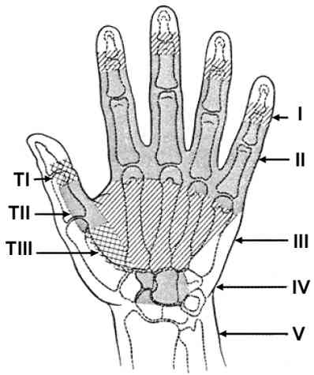

Bienvenue Sur Medical Education
Plaies de la main et des doigts
Spécialité : symptomes / traumatologie /
Points importants
-
Risques fonctionnels
-
Exploration analytique et rigoureuse par zones anatomiques
-
Lésions ostéo-articulaires associées
-
VAT
-
Ne pas hésiter à confier au chirurgien au moindre doute
-
Surveiller l'évolution
Présentation clinique / CIMU
SIGNES FONCTIONNELS
-
Les déficits fonctionnels sont :
-
évidents et décrits par le blessé
-
non évidents et à rechercher de façon rigoureuse et analytique
CONTEXTE
Terrain
-
Main dominante ?
-
Profession (Accident du travail ?)
-
Fumeur
Traitement usuel
-
Corticothérapie au long cours
-
Anti inflammatoires non stéroïdiens
Antécédents
-
Diabète
-
Immunosuppression
Circonstances de survenue
-
Accident du travail ?
-
Agent vulnérant et mécanisme (plaie pénétrante ?, injections sous pression ?, contusion appuyée ?)
EXAMEN CLINIQUE
_836
Exploration d'une plaie de la face dorsale du doigt
Rigueur - anatomie topographique et fonctionnelle
Mécanisme
-
Notion de pénétration de l'agent vulnérant => profondeur de la plaie
Topographie
-
Zones de Verdan et Michon => à reporter à l'anatomie :
-
zone 1 :
-
face palmaire : tendon fléchisseur profond, articulation IPD
-
latéralement : nerfs collatéraux
-
face dorsale : tendon extenseur, articulation IPD
-
zone 2 :
-
face palmaire : tendons fléchisseurs et canal digital, nerfs interosseux et collatéraux, articulations métacarpophalangiennes et IPP, arcades vasculaires et distribution des nerfs, aponévrose palmaire.
-
face dorsale : tendons extenseurs, articulations IPP et MCP
-
zones 3 et 4 :
-
face palmaire : tendon du long palmaire, nerf médian, nerf ulnaire plus profond, artère radiale et plus profonds tendons fléchisseurs
-
face dorsale : gaines synoviales des tendons extenseurs et tendons

_388
Anatomie des tendons de la main
Examen fonctionnel : les déficits
-
Neurologique :
-
sensibilité (pique-touche) des territoires des nerfs collatéraux
-
motricité (interosseux, lombricaux : écarter et rapprocher les doigts longs entre eux ; muscles des éminences thénar et hypothénar : pince pouce/V)
-
Vasculaire :
-
aspect des téguments et chaleur cutanée
-
test d'Allen des doigts (si possible) et /ou temps de recoloration sous-unguéal à la vitro pression < 3 sec ; ou mise en bout de doigt du capteur de SpO2
-
Mécanique :
-
déficit par rupture totale (aucun mouvement) ou partielle (mouvement mais sans force) de tendons
Signes paracliniques
IMAGERIE
Radiographies (face, profil, ¾)
-
Corps étrangers radio opaques
-
Lésions ostéo-articulaires
Traitement
TRAITEMENT PREHOSPITALIER / INTRAHOSPITALIER
Stabilisation initiale
-
Si hémorragie : compression et élévation de la main au-dessus du plan du coeur
-
SAT, VAT
-
Pansement de couverture antiseptique (salle d'attente)
-
Détersion, décontamination (trempage dans solution antiseptique pendant 10 à 15 min si le contexte le permet, désinfection)
-
Exploration sous anesthésie locale après avoir évalué les déficits sensitivomoteurs éventuels
-
Jamais de lidocaïne adrénalinée pour une anesthésie locale de la main et des doigts
-
Exploration : bilan lésionnel en sachant confier au chirurgien au moindre doute et en cas d'impossibilité d'effectuer un bilan complet aux urgences.
-
Si suture simple aux urgences ; pansement gras et ablation des fils dans les 15 jours
Suivi du traitement
-
Si plaies incomplètement fermées (petites pertes de substances, dermabrasions profondes de la saillie des articulations MP à la face dorsale de la main) => pansements gras et assurer le suivi évolutif
MEDICAMENTS
-
Antalgiques
-
Antibiotiques couvrant les anaérobies si plaies profondes, souillées, au voisinage de structures anatomiques nobles (articulations, tendons) ou si rupture tendineuse et/ou plaie articulaire (en attendant le passage au bloc opératoire)
-
SAT, VAT selon l'actualité de la vaccination anti tétanique
Devenir / orientation
CRITERES D'ADMISSION
-
Déficits fonctionnels
-
Atteintes vasculo-nerveuses
-
Plaies difficiles à explorer aux urgences et qui ne font pas leur preuve certaine de non gravité
CRITERES DE SORTIE
-
Plaies superficielles, sans déficit
ORDONNANCE DE SORTIE
-
Ablation des fils = J15
-
Antalgiques
-
Nécessaire à pansements (+ prescription pansement IDE)
-
Antibiotiques pendant 10 jours si nécessaire
RECOMMANDATIONS DE SORTIE
-
Arrêt de travail jusqu'à ablation des fils si contacts professionnels avec les aliments (restauration, industrie alimentaire ...)
Bibliographie
Auteur(s) : Michel SCEPI